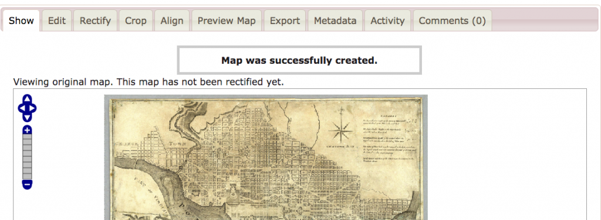
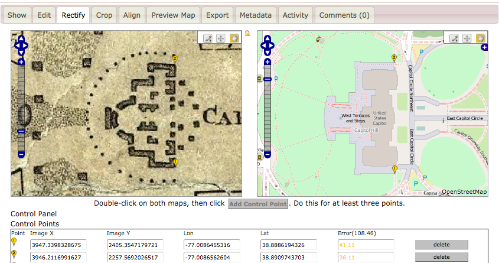
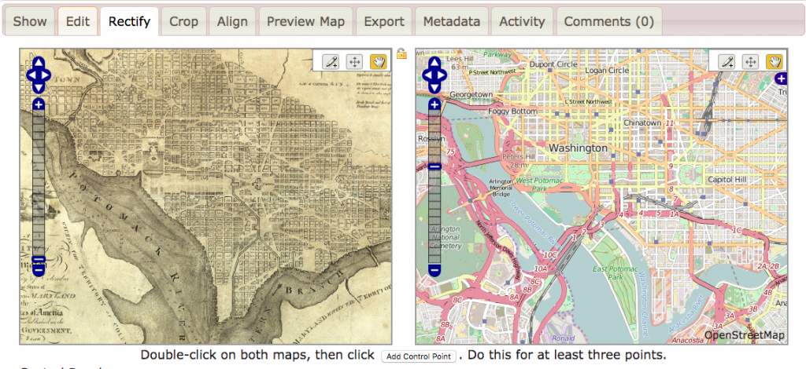

Georectifying Maps
Map Warper is a tool that allows you to georectify maps. Georectification involves matching control points to align the map image with an existing coordinate system. After plotting corresponding points, the tool warps the historical map (using an algorithm) so that it lines up with the contemporary OpenStreetMap.
For our purposes, it will allow us to build historical map layers, which we can use to examine changes in space and place over time.
1. Open Map Warper and create a new account. (Yes, another one!)
2. Upload a high-resolution map. To test this tool, try one of the selected historical maps of Washington, D.C. from the David Rumsey Map Collection or use a map from your collection.
- John Reid, Plan of the City of Washington, 1795
- Edwin Olsen and Blake Clark, Washington, D.C., Showing the Architecture and History, 1926
- George Annand, et al, Romance Map of the City of Washington, 1938
3. Click “Export” and download the highest resolution image.
4. In the Map Warper window, click to “Upload Map.” Enter metadata and click to “Create.” 

5. Click the “Rectify” tab. In the side-by-side interface, you can navigate between each map using the mapping tools on the left. In both map windows, navigate to Washington, D.C.
- Navigation: Click the white triangles to move up/down/left/right.
- Zoom: Click the plus or negative signs to zoom in or out one step. Move the blue slider button to move multiple steps at once. (Note: you may also use your mouse/trackpad to pan and zoom)


6. Locate shared points on each map. Use the controls at the top right to add and modify Control Points on each map. (Note: You should add at least three points to rectify. Focus on locating points across the map- not in one single area)
- Add Control Point: Click the small marker pin button to add points. Click again on the map to place the marker.
- Move Control Point: Click the arrow button to edit control point positions. Click again on the point to move it. Click to place the point in the new position.
- Move Around Map: Click the small hand button to easily move around the viewer. Click, hold, and drag to slide the map around. Release to place it.
- Below the map images, click “Control Points” to see a list of points.
- Click the “Add Control Point” button below the maps once you have lined up the points.
- Control points are numbered once you’ve added them.

7. After you have added points, click “Warp Image.” Click the “Preview Map” tab. A “Transparency” slider will allow you to compare the two maps in your window. (Note: you can return to the “Rectify” tab to add/edit points to improve your results.) 

Using the map
- Click the “Export” tab to use your map. For your Omeka project, downloading the layered maps as a PNG image (with appropriate opacity) makes it easy to add them to your Omeka Exhibit.
- GeoTiff – can be opened in QGIS/GIS software
- PNG – can be opened in QGIS/GIS software
- KML – can be opened in Google Earth
- WMS – use the URL to add map layers in CartoDB and Neatline.
- Tiles – use the URL to create tiles in CartoDB. For more info see the Carto blog.
- Add the PNG as an item in your collection. Be sure to include the source and copyright information.
Note: (Lincoln Mullen has put together an excellent tutorial on georectification using Map Warper with helpful tips and additional information on using a georectified map with GoogleEarth and creating map tiles with QGIS.